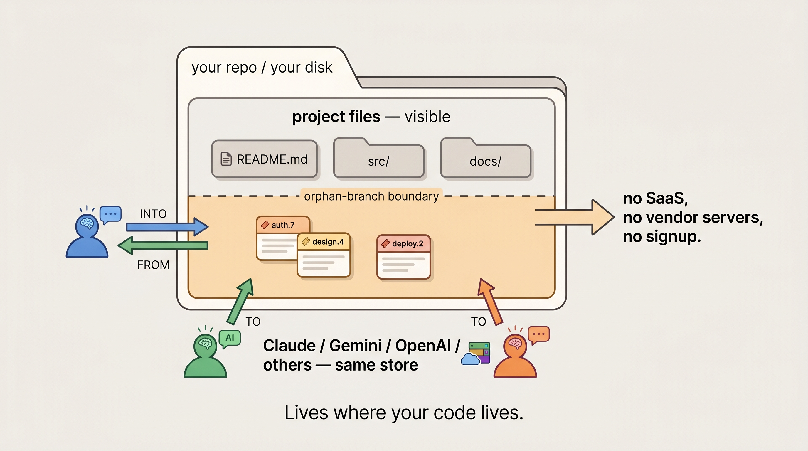

If you don't write code, this section explains the parts that the developer version takes for granted. None of this is hard; it's just unfamiliar if it's new.

Lives in a folder on your computer.
Git is a free, very-reliable program that records every version of every file in a folder. Programmers use it for code; bw uses it because it's the most trustworthy way humans have figured out to keep notes that don't get lost. Git has been around for nearly twenty years and runs on essentially every computer.
You probably don't have it installed yet (most non-programmers don't). The install skill walks your AI through installing it — it's a one-time, free download from git-scm.com. It runs in the background; you'll never have to type anything into it yourself.
bw is a small program that uses git to keep a "shelf" of notes inside any folder you point it at. The shelf doesn't interfere with anything else in the folder. Your AI reads from the shelf and writes to the shelf. That's basically it.
The simplest free option: notes stay on one computer, never uploaded anywhere, no online account needed. That's mode 1 below. If you only ever use one computer and want maximum privacy, you can stop reading after that one.
Notes never leave your machine. You don't need a GitHub account or any other online account. Only git installed. Maximum privacy — nothing uploaded anywhere, ever. If your laptop dies, the notes go with it, so this mode is best when you're either confident in your backups or okay with starting fresh.
If you want your notes to survive a laptop crash and be available on, say, your desktop too, you push them to a private cloud folder on GitHub. The smoothest path for a non-coder is a paid GitHub Pro plan, about $4 a month. Only you can see the contents.
Technically, a free GitHub account also offers private repos — but for non-coders the paid plan is the simpler setup, and it's what most people in this situation end up using.
If you want your team to share notes — everyone's AI plus the humans, all reading and writing the same shelf — the notes go in a private cloud folder the team has access to. For a real team, this usually means a paid GitHub Team plan (about $4 per person per month) for the team-management features.
Same as private cloud, but the repo is public. Don't use this for personal or business notes. Fine for open-source-style work where the notes are meant to be public.
If you say "yes, set this up," your AI will (with you confirming each step):
bw made up.bw — a small command-line program, MIT-licensed, source code public on GitHub.The AI session itself can do other things you give it permission to do (that's normal AI behavior). But bw the tool only tracks notes — it can't make purchases, send messages, or touch files outside the folder you point it at.
You still don't have to learn anything new. Your AI runs bw for you. Your only real choices are: which storage mode (above), and (if cloud) which GitHub plan.